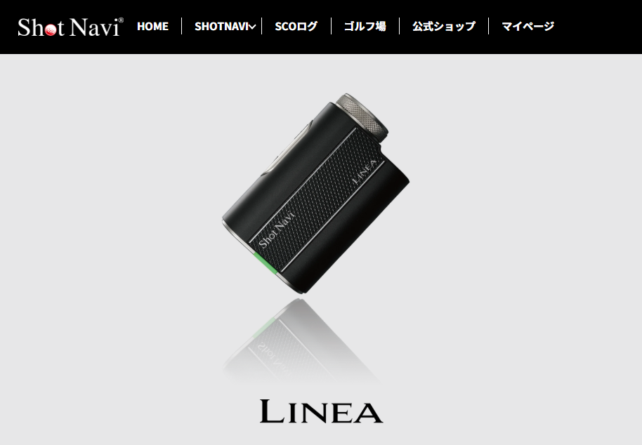
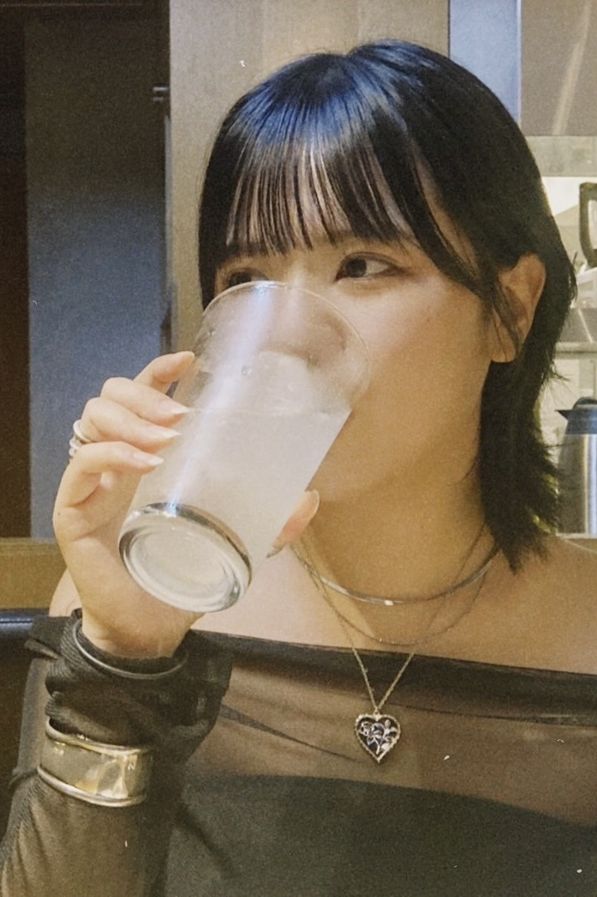
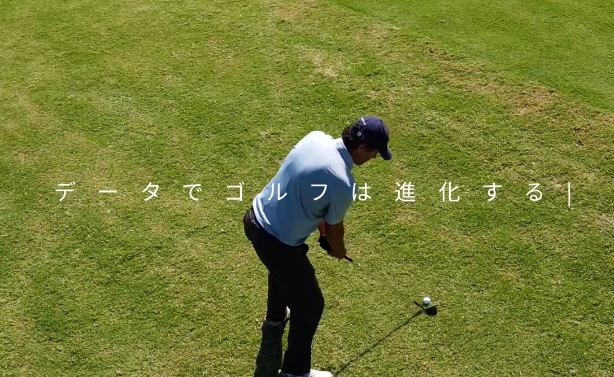

01 WORKS
FEATURES PROJECT
For more information on this production's images, they correspond
with the text on the right.
Please refer to the number for further information.
01

DETAILS
- レーザー距離計のアイテムページ
使用ツール : Fgima/HTML/CSS/JS 制作期間 : 1週間 - Amazonの商品ページ
使用ツール : Fgima/Amazon 制作期間 : 1週間 - 某地域病院 Webサイト制作
使用ツール : Wordpress / PHP /Photoshop 制作期間 : 1か月 - 株式会社NOX DESIGN Webマーケティング会社のサイト制作
使用ツール : /Studio/Figma/Photoshop 制作期間 : 2週間 - インソール製品のLPデザイン
使用ツール : Figma 制作期間 : 1週間

02 ABOUT
PROFILE
Here is my background and brief work history.
Anno Minako
阿武 未奈子 1996.5.22生まれ
山口県下関市立南高等学校の理数クラス卒業
桑沢デザイン研究所に入学するため東京上京
グラフィック、空間、プロダクト、ファッションデザインを学び、卒業後はアパレル業界に就職。
アパレルでファッションデザイナーとして5年勤めた会社を退職し、Webデザイン会社にてWebデザインを学ぶ。
趣味はイラスト、ファッション、スポーツ全般。ポメラニアンとお酒が好き
mail : anchan8522@gmail.com
tel : 090-9473-2258
X : @An28626472
03 OTHERS
OTHERS PROJECT
These are work projects and hobby productions received outside of
the company.
This also has details corresponding to the number.
01
DETAILS
- 動画制作
使用ツール : After Effects / Premium Pro 制作期間 : 1週間 - 3Dモデリング
使用ツール : 3D blender 制作期間 : 1週間
- グラフィックデザイン
使用ツール : illustrator / Photoshop 制作期間 : 1時間 - ファッションデザイン
使用ツール : illustrator / Photoshop 制作期間 : 3日 - イラストレーション
使用ツール : illustrator / Photoshop 制作期間 : 1日